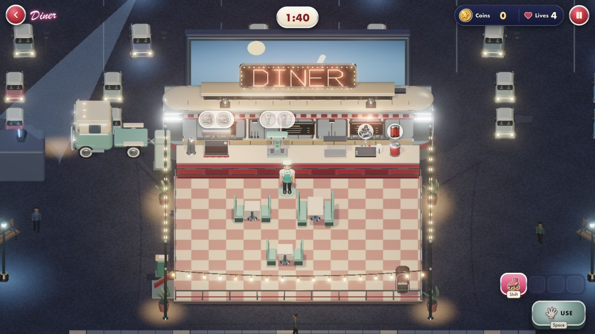

Actual WebGL captures from the existing Diner lab, with its ACES exposure and bloom (strength 0.38, threshold 0.92). Desktop 1280×720 and portrait 390×844. These six-place views show the stage and surroundings; the occupied shift below also shows appliances and a player. Click an image for its original capture.
One focused integration view with appliances, the player and the normal HUD. This is not an all-place gameplay or physical-touch check.
